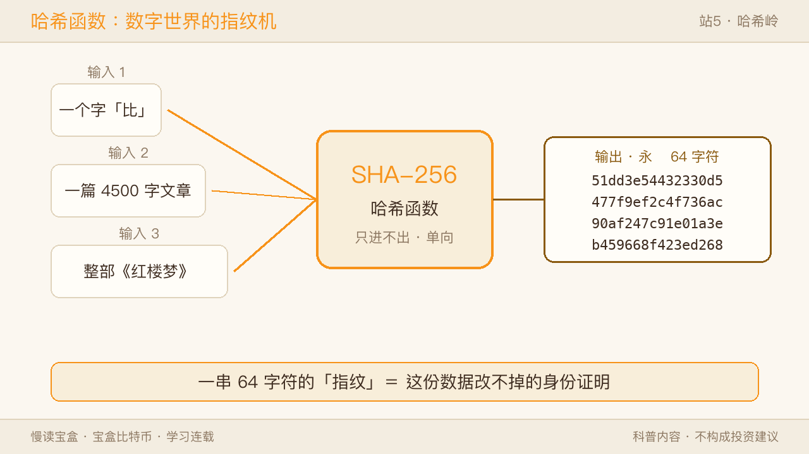
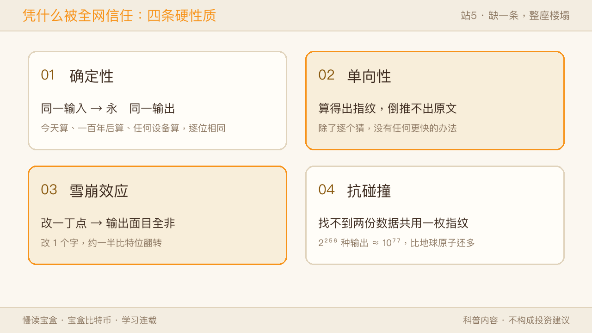
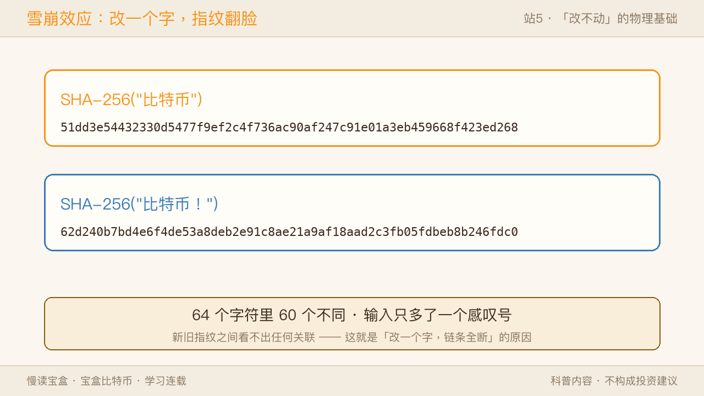
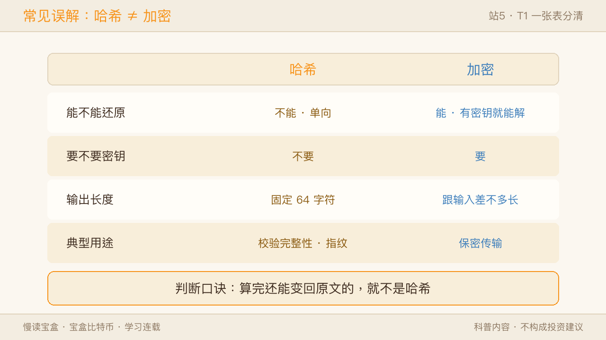
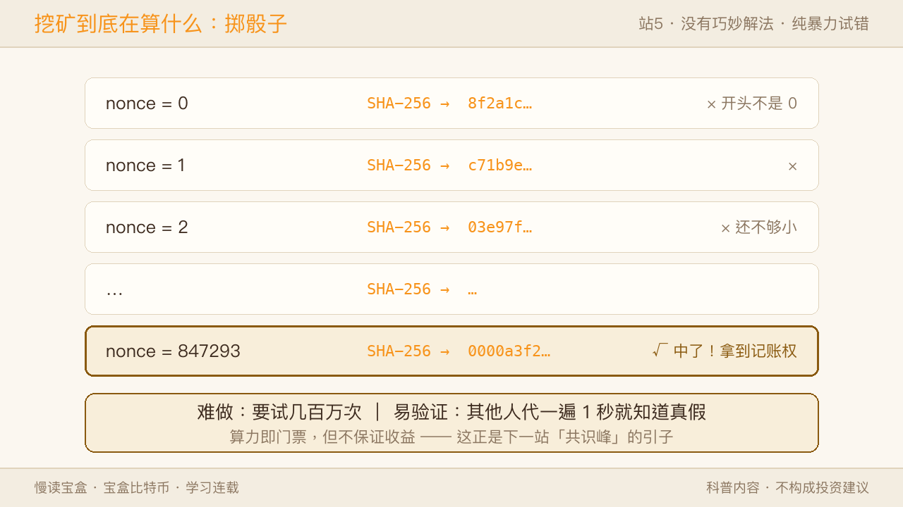
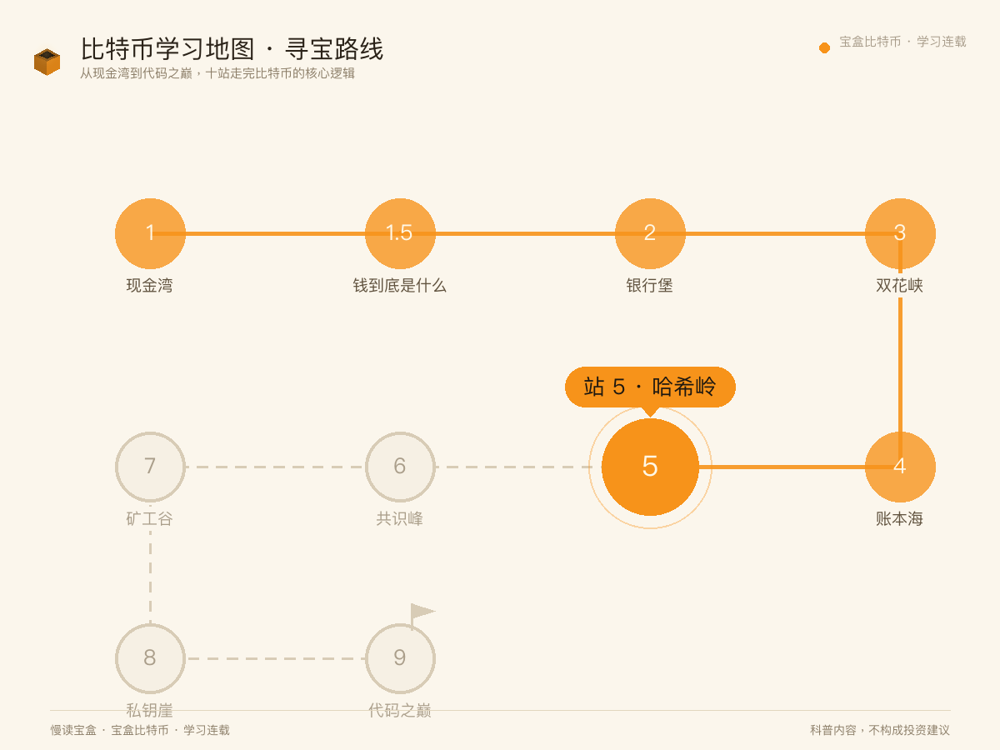
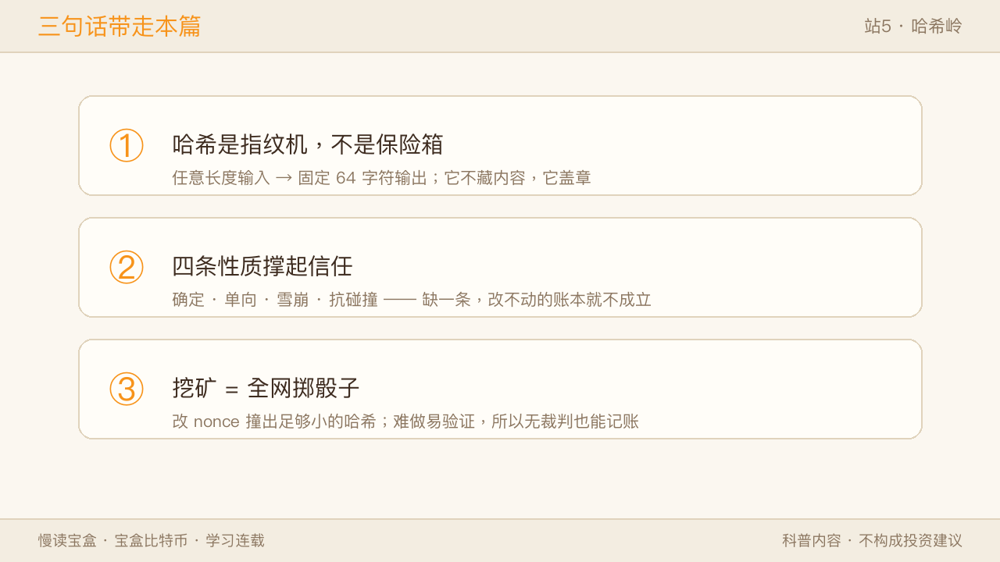

站 4「账本海」我们看清：比特币的账本改不动，靠的是「只追加 + 指纹锁链」——每一页账本都写着「上一页的指纹」，改一个字，指纹就变，链条就断。可那个「指纹」到底是什么造出来的？凭什么全网几万台机器都信它？这一站「哈希岭」，我们拆开这台机器。

一、哈希岭是什么：一台只进不出的搅拌机
哈希函数做的事，一句话讲完：把任意长度的输入，搅成一串固定长度的输出。
你喂给它一个字「比」，它吐出 64 个字符；你喂给它整部《红楼梦》，它还是吐出 64 个字符。输入可以是一个字节，也可以是 100 GB 的硬盘镜像，输出永远是同一个长度——SHA-256 的话，就是 64 个十六进制字符。
✅ 像的地方：就像厨房搅拌机——不管丢一个苹果还是一整车苹果，出来都是一杯固定容量的果泥；同样的食材每次搅出来一模一样；你想从果泥把苹果拼回去，做不到。 ⚠️ 不一样的地方：两台搅拌机搅出的果泥有细微差别；哈希是纯数学——同一个输入，在地球任何一台电脑上算一万次，结果逐位相同，一个字符都不会差。
一句话：哈希不是加密，它不打算把内容藏起来——它是给内容盖一个改不掉的章。
二、凭什么被全网信任：四条硬性质
哈希能当地基，靠四条性质，缺一条整座楼就塌。

① 确定性：同一个输入，永远同一个输出。今天算、一百年后算、在任何设备上算，逐位相同。看着平凡，却是全网共识的前提——几万台机器各自算，算出来必须一模一样。
② 单向性：从输入算输出容易，从输出倒推输入，做不到。不是「很难」——是除了把可能的原文挨个喂进去碰运气，没有任何更快的办法。这就是为什么「先公开指纹、明天再公布原文」是一种安全的承诺：谁都能验证，谁也猜不出。
③ 雪崩效应：输入改动一丁点，输出面目全非。不是「变一点点」，而是平均一半的比特位翻转——新旧指纹之间看不出任何关联。这正是上站「改不动」的物理基础。

④ 抗碰撞：几乎不可能找到两份不同的数据共用一枚指纹。SHA-256 的输出空间是 2²⁵⁶ ≈ 10⁷⁷，比地球全部原子数（约 10⁵⁰）还多 27 个数量级——撞到宇宙热寂也撞不上。
双视角：数学家视角——「抗碰撞」在数学上并未被证明，只是几十年没人攻破的工程共识；用户视角——你不需要懂证明，只需要知道：改一个字全变、倒推不出原文，这两条撑起了「账本改不动」。
⚠️ 必须说清的红线：「不可能」从来都是「代价高到不划算」的同义词，不是绝对。MD5 和 SHA-1 都已被攻破退出了安全场景，SHA-256 目前仍然安全——密码学的「安全」是动态的，不是永久的。
三、常见误解：哈希 ≠ 加密
新手最容易混的一对，一张表分清。
T1 · 哈希 vs 加密
| 哈希 | 加密 | |
|---|---|---|
| 能不能还原 | 不能，单向 | 能，有密钥就能解 |
| 要不要密钥 | 不要 | 要 |
| 输出长度 | 固定 64 字符 | 跟输入差不多长 |
| 典型用途 | 校验完整性、指纹 | 保密传输 |

判断口诀：算完还能变回原文的，就不是哈希。 网站存密码用的是哈希——所以客服说「我们看不到你的密码」，他真的看不到，只能验证你输的对不对；HTTPS 传数据用的是加密——对方拿到密钥必须能还原内容。
双视角：用户视角——「我的密码存网站里安全吗？」技术真相——「存的是密码的哈希，网站自己也不知道原文；但密码本身太简单的话，会被『彩虹表』按指纹反查出原文，所以要用长而独特的密码」。
四、挖矿到底在算什么：全网掷骰子
理解了四条性质，就能看懂最反直觉的环节——挖矿。
矿工把一批待确认的交易，加上一个叫 nonce 的随机数，一起喂进 SHA-256。系统的要求：算出的哈希必须小于某个目标数（直观理解成「开头必须够多个 0」）。但哈希不可预测——你没法「调整输入让输出小一点」，只能改 nonce 重算，撞运气。

所以挖矿的本质是全世界一起掷骰子，谁先掷出足够小的点数，谁拿到这一页的记账权。不是「解一道数学题」——没有任何巧妙解法，就是纯粹的暴力试错。
这个设计精妙在哪：
- 难做，但易验证。 矿工要试几百万次才能撞出一个；其他人验证只要代入算一次，一秒知道真假。正因为「验证极便宜」，无裁判的全网才能高效对账。
- 算力即门票，但不保证收益。 算得快只是概率高，不等于必中——这套「没有裁判的投票」怎么运转，是下一站「共识峰」的主角。
✅ 像的地方：像全小区一起刮一种「百万分之一中奖率」的彩票，谁刮中谁负责在公告栏记一页账，大家核对无误就抄走。 ⚠️ 不一样的地方：彩票中心可以印假票；这里的「骰子」是数学，出千的唯一办法是买下超过一半的骰子（过半算力），成本大到不如老实记账。
五、回到地图（启下共识峰）
回到这张 10 站学习地图——站 1 现金湾见了比特币是什么；站 2 银行堡看清它要取代什么；站 3 双花峡看它怎么按住双花；站 4 账本海看它用什么承载这笔账；本站哈希岭，我们拆开了那台造指纹的机器——一台只进不出、改一丁点就翻脸的搅拌机。

但还剩最后一道坎：全网几万台机器，凭什么都认同一份账本？两个人同时掷出了合格的点数怎么办？下一站「共识峰」，我们看这套没有裁判的投票机制。
三句话带走本篇：
